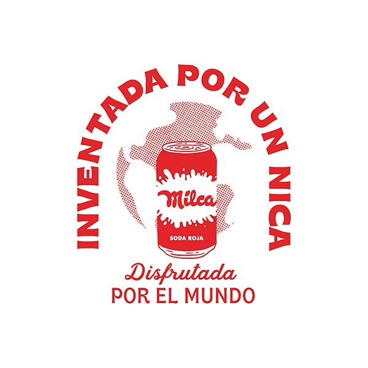
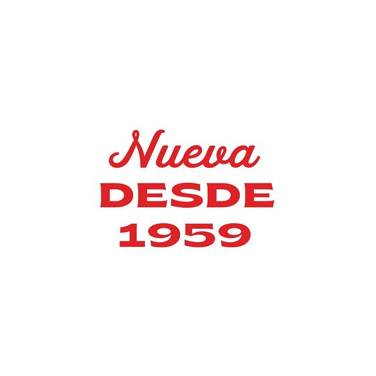
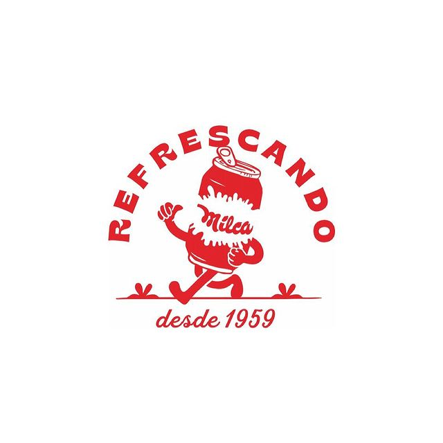
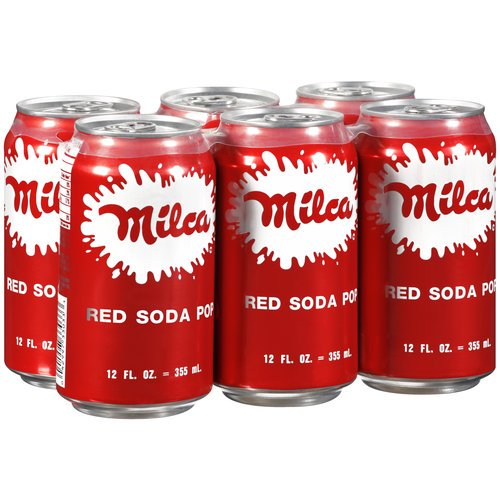
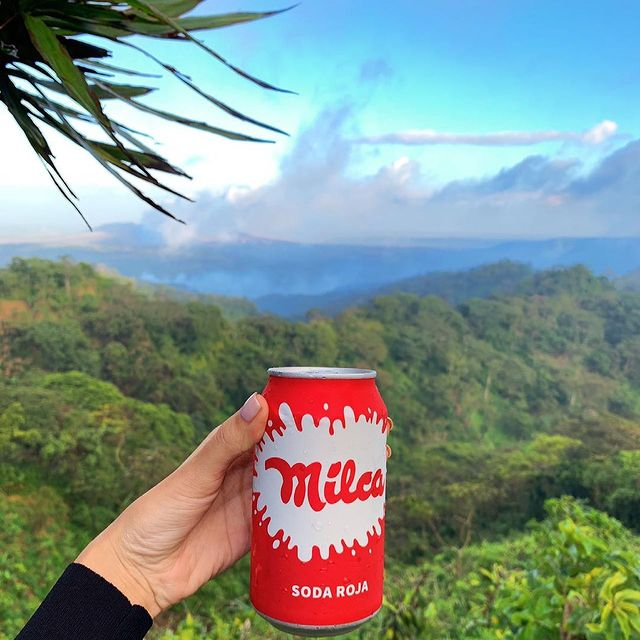

¡No hay nada mejor que una Milca Roja helada!
¡Famosa por saciar la sed y unir familias desde 1959!
En 1920, Don Julio Lacayo fundó una tienda de refrescos en León, Nicaragua y la llamó “La Chiboleria Lacayo” por el apellido de su familia. La tienda embotellaba y vendía refrescos en varios colores como rojo, naranja, morado y amarillo. En 1959, su hijo Don Manuel Ignacio Lacayo Terán, perfeccionó la fórmula original y fundó “Embotelladora Milca” usando sus iniciales “MIL” para dar nombre a su refresco. Milca ™ ganó popularidad como el primer refresco rojo de marca en Nicaragua convirtiéndose en un nombre familiar y en el favorito de adultos y niños por igual.
En 1988, luego de una gran ola de inmigrantes nicaragüenses y bajo el liderazgo de Ramiro Cardenal, Milca se mudó a los Estados Unidos para seguir creciendo y conquistando corazones. Al expandirse a cadenas minoristas y de comestibles en el sureste y la costa oeste, Milca se convirtió en un favorito en los Estados Unidos con compradores de muchos orígenes corriendo para disfrutar de uno frío. En 1998, debido a la situación social y política, Milca descontinuó las operaciones de embotellado en Nicaragua y continuó creciendo en los Estados Unidos mientras tenía su sede en Miami, Florida.
No fue hasta 2020, cuando el bisnieto mayor de Don Manuel, Javier Ignacio Cuadra, trajo a Milca de regreso a Nicaragua a través de una asociación estratégica con un embotellador y distribuidor, Compañía Cervecera de Nicaragua (CCN) y Compañía Distribuidora de Nicaragua (CDN). . Hoy, Milca está disponible en todos los supermercados, tiendas de conveniencia, restaurante, bar y tienda de abarrotes en Nicaragua y continúa expandiéndose a otros mercados en América Central, América del Sur y Europa. Si aún no ha probado una Milca, avísenos y disfrutaremos una con usted.


¡Envíe un paquete de 6 a su hogar por $ 20!
Realizar un pedido.
¡Bebe una Milca!
#SiempreConMilca